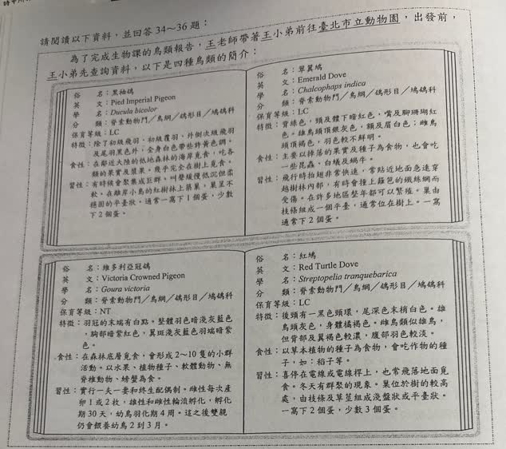
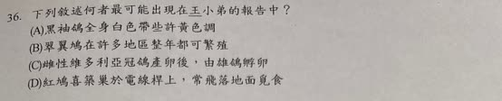

分享原卷｜第36題
完整原題
作答所需文章／材料
為了完成生物課的鳥類報告，王老師帶著王小弟前往臺北市立動物園，出發前，王小弟先查詢資料，以下是四種鳥類的簡介：| 項目 | 內容 |
|---|---|
| 英文 | Pied Imperial Pigeon |
| 學名 | Ducula bicolor |
| 分類 | 脊索動物門／鳥綱／鴿形目／鳩鴿科 |
| 保育等級 | LC |
| 特徵 | 除了初級飛羽、初級覆羽、外側次級飛羽及尾羽黑色外，全身白色帶些許黃色調。 |
| 食性 | 在鄰近大陸的低地森林的海岸覓食，吃各類的果實及漿果。幾乎完全在樹上覓食。 |
| 習性 | 有時候會聚集成巨群，叫聲緩慢低沉但柔軟。在離岸小島的紅樹林上築巢，巢呈不穩固的平台狀。通常一窩下1個蛋，少數下2個蛋。 |
| 項目 | 內容 |
|---|---|
| 英文 | Emerald Dove |
| 學名 | Chalcophaps indica |
| 分類 | 脊索動物門／鳥綱／鴿形目／鳩鴿科 |
| 保育等級 | LC |
| 特徵 | 背綠色，頸及體下暗紅色，嘴及腳珊瑚紅色。雄鳥頭頂銀灰色，額及眉白色；雌鳥頭頂褐色，羽色較不鮮明。 |
| 食性 | 主要以掉落的果實及種子為食物，也會吃一些昆蟲、白蟻及蝸牛。 |
| 習性 | 飛行時拍翅非常快速，常貼近地面急速穿越樹林內部，有時會撞上籬笆的鐵絲網而受傷。在許多地區整年都可以繁殖。巢由枝條組成一個平台，通常位在樹上。一窩通常下2個蛋。 |
| 項目 | 內容 |
|---|---|
| 英文 | Victoria Crowned Pigeon |
| 學名 | Goura victoria |
| 分類 | 脊索動物門／鳥綱／鴿形目／鳩鴿科 |
| 保育等級 | NT |
| 特徵 | 羽冠的末端有白點。整體羽色暗淺灰藍色，胸部暗紫紅色，翼斑淺灰藍色羽端暗紫色。 |
| 食性 | 在森林底層覓食，會形成2～10隻的小群活動。以水果、植物種子、軟體動物、無脊椎動物、螃蟹為食。 |
| 習性 | 實行一夫一妻和終生配偶制。雌性每次產卵1或2枚，雌性和雄性輪流孵化，孵化期30天，幼鳥羽化期4周，這之後雙親仍會餵養幼鳥2到3月。 |
| 項目 | 內容 |
|---|---|
| 英文 | Red Turtle Dove |
| 學名 | Streptopelia tranquebarica |
| 分類 | 脊索動物門／鳥綱／鴿形目／鳩鴿科 |
| 保育等級 | LC |
| 特徵 | 後頸有一黑色頸環，尾深色末梢白色。雄鳥頭灰色，身體橘褐色。雌鳥類似雄鳥，但背部及翼褐色較濃，腹部羽色較淡。 |
| 食性 | 以草本植物的種子為食物，會吃作物的種子，如：稻子等。 |
| 習性 | 喜停在電線或電線桿上，也常飛落地面覓食。冬天有群聚的現象。巢位於樹的較高處，由枝條及草莖組成淺盤狀或平台狀。一窩下2個蛋，少數3個蛋。 |
下列敘述何者最可能出現在王小弟的報告中？
(A) 黑袖鴿全身白色帶些許黃色調
(B) 翠翼鳩在許多地區整年都可繁殖
(C) 雌性維多利亞冠鴿產卵後，由雄鴿孵卵
(D) 紅鳩喜築巢於電線桿上，常飛落地面覓食
先想一想，再查看答案、解說與原圖
原卷作答：D
正確答案：B，翠翼鳩在許多地區整年都可繁殖。
逐項解析
| 選項與原句 | 判讀 | 句意與判斷理由 |
|---|---|---|
| (A) 黑袖鴿全身白色帶些許黃色調 | 不選 | 省略黑色飛羽與尾羽的例外，不能概括為全身白色。 |
| (B) 翠翼鳩在許多地區整年都可繁殖 | 應選 | 與翠翼鳩習性欄的敘述直接相符。 |
| (C) 雌性維多利亞冠鴿產卵後，由雄鴿孵卵 | 不選 | 原資料是雌雄輪流孵化，選項沒有表達輪流照護。 |
| (D) 紅鳩喜築巢於電線桿上，常飛落地面覓食 | 不選 | 電線桿是停棲處，築巢處是樹的較高處。 |
詳細說明與解題步驟
【逐項回到資料核對】
A黑袖鴿的資料明寫初級飛羽、初級覆羽、外側次級飛羽及尾羽是黑色，其他部位才是白色帶些許黃色調。不能省去例外，說成全身白色帶些許黃色調。
B翠翼鳩習性直接寫在許多地區整年都可以繁殖，與選項相符，因此選B。許多地區不等於所有地區，閱讀時仍保留原來的範圍。
C維多利亞冠鴿由雌雄輪流孵化，不是選項只說由雄鴿孵卵的單一親鳥敘述。
D紅鳩喜停在電線或電線桿上、會落地覓食；築巢的位置卻是樹的較高處。不能把停棲處搬成築巢處。
【讀表的方法】
先找鳥名，再定位特徵、食性、習性，最後逐字比較範圍與行為：全身或有例外、許多或全部、雌雄輪流或單一性別、停棲或築巢。
四種鳥資料及LC、NT代碼依原卷保留；本題依提供的資料判讀，不以現行保育分級替換原題。
核對註記：已依原卷核對四種鳥的完整資料、題幹與全部選項；密集文字另以臺北市立動物園公開原始資料交叉查核，籬笆的鐵絲網、額及眉、橘褐色等已逐字比對。原卷資料與現行資料不同處仍按原卷保留。
原圖（僅本題）

